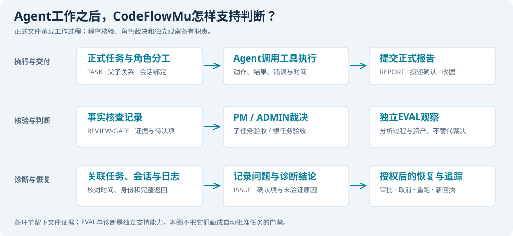

CodeFlowMu业务支持与实际文件证据
样本：2026年9月9日Cursor最终EVAL成功后的独立备份。以下只公开文件名、大小与摘要用于来源核对，不附原始私人日志、配置或凭据。
1.8 Agent工作之后：CodeFlowMu的一整套业务支持
CodeFlowMu不仅让Agent开始工作，还支持交付后的证据核查、角色验收、独立观察和故障诊断。 这些环节依靠实际落地的文件相互关联，构成我们评判团队工作的业务基础。运行记录、程序核查、PM判断和EVAL分析不能混成一句“系统认为完成”。

业务支持图｜执行与交付留下原始事实，事实核查提供证据状态，PM与ADMIN承担业务裁决，EVAL独立观察；诊断与恢复继续沿记录进行。
第一层：正式接单，持续记录实际执行
ADMIN提交形成正式任务，PM建立有父子关系的角色任务。执行记录关联任务、角色、会话和工具调用，保存调用时间、返回、失败与后续状态。团队交付REPORT时，还要有正式写入和投递记录。这样才能区分“开始执行”“产生正文”“提交成功”和“已经验收”。
第二层：生成事实核查记录，而不是只听Agent自述
本轮Cursor备份中，实际存在fcop/reviews/REVIEW-20260909-001-REVIEW-GATE-on-TASK-20260909-002.md。它的类型为fact_check，关联DEV的正式REPORT，保存执行证据状态、待判断项、证据快照及摘要哈希。
这条记录同时包含execution_evidence_state: verified、review_state: needs_pm、business_decision: false和attention_owner: PM：执行证据已经核实，但业务判断仍交给PM。它也记录third_party_source_state: not_configured，没有把未配置的第三方核验说成已经通过。旧兼容字段即使写作needs_admin，也应结合实际注意力归属和待决字段理解，不能只凭一个标签判断谁来验收。
第三层：PM验收工人交付，ADMIN验收根任务
PM根据原任务、角色报告、事实核查结果与实际证据判断子任务，并汇总给ADMIN。正式操作留下命令收据与任务状态变化；需要人工授权的操作另有审批记录。业务完成由相应责任角色判断，EVAL和程序核查不会替代他们作裁决。Cursor的模型恢复就是通过这条授权路径继续执行的。
第四层：EVAL独立分析，诊断沿证据追踪原因
EVAL的面板扫描与任务记录分析各自形成文件；其启动、失败与恢复尝试也有记录。独立观察发现矛盾后，继续对照任务、会话、工具返回、投递确认和审批，判断问题发生在哪一层。确认的问题可以形成ISSUE并关联后续处置；证据不够时保留诊断假设，不能自动把所有异常都认定为程序缺陷。
本轮究竟生成了哪些文件证据
以下文件已在Cursor轮次的独立备份中核对存在。日期和序号属于这个样本，不表示每轮都应生成完全相同的文件名。
| 支持环节 | 实际文件或文件类型 | 可以核对什么 |
|---|---|---|
| 任务提交与派单 | SUBMISSION-20260909-001.json、根TASK与002～005子TASK、fcop/ledger/tasks.jsonl | 委托正文、角色分工、父子任务、取消与重跑关系 |
| 实际执行 | fcop/logs/runtime/actions-20260909.jsonl、runtime-events-20260909.jsonl | 谁在什么任务和会话中做了哪些动作，结果及时间是什么 |
| 工具传输 | .codeflowmu/logs/tool-transport-events.jsonl | 工具名、调用关联、进入Runtime及传输事件，帮助定位调用链问题 |
| 正式交付 | fcop/reports/REPORT-20260909-001-DEV-to-PM.md等四份报告、.codeflowmu/report-delivery/acks.jsonl | 工人及PM写了什么，报告是否正式交付、投递给哪次PM会话 |
| 事实核查 | fcop/reviews/REVIEW-…-REVIEW-GATE-on-TASK-….md | 执行证据状态、待决项、证据快照、谁负责下一步判断 |
| 裁决与授权 | .codeflowmu/task-command-receipts.jsonl、审批审计、GOV-bb724f6c69445c020fec9621-r1.md | 操作请求与收据、任务修订、ADMIN授权及其边界 |
| EVAL观察 | OBSERVATION-20260909-002-panel-scan.md、OBSERVATION-20260909-003-benchmark-CUSTOM-20260909-001.md | 面板资产观察与本次任务过程的独立分析 |
| EVAL恢复 | fcop/internal/eval/eval-observation-attempts.jsonl | 分析何时启动、失败、重试，最终报告是否落地 |
| 问题追踪 | fcop/issues/ISSUE-20260909-001-PM.md及关闭记录 | 模型配置问题怎样被提出、处理和留下历史 |
| 过程与用量 | 聊天/任务过程JSONL、fcop/logs/usage/usage-20260909.jsonl | 公开过程、Host结果与用量旁证，不把缺少文字当作没有执行 |
这些文件来自CodeFlowMu实际业务链。我们再将其按轮导出保全，形成来源索引、阶段时间线、事实核查与诊断说明、计时和评分表，最终写成本文。分析依据是一整套文件化实验档案，既包含系统产生的原始工件，也包含我们据此形成的独立分析材料。 具体清单与摘要见业务支持与文件证据。
已核对的原始文件清单
| 文件 | 字节 | SHA256 |
|---|---|---|
.codeflowmu/task-submissions/SUBMISSION-20260909-001.json | 2395 | ac963ca93dfc99cdd161104543acdc6df26cf8da25c64ea2ca7dfda696e77464 |
.codeflowmu/task-command-receipts.jsonl | 52794 | 672f29b4ef52b2038ebf4afa77f53420e03d6f034b62e8406d0bf468c2ba52f6 |
.codeflowmu/report-delivery/acks.jsonl | 1150 | 1f069f39213996367c4d3521d34e9b2c65f4e0eed93188dddd6fd47678dbbc95 |
.codeflowmu/logs/tool-transport-events.jsonl | 202769 | 1cf20f94d76351e2b01fed623cd3a252134b90161a3fbef84d698092f4de877c |
.codeflowmu/operation-approvals/audit.jsonl | 73843 | 6b9a2a3f4b6a09021a3b6f46310aac432345e4fdaf7048cbc2b4655f9159e841 |
fcop/logs/runtime/actions-20260909.jsonl | 136492 | 55fbdf8e312b648ca305e32e959b24196c69e816bed44808e082a721c70a92dd |
fcop/logs/runtime/runtime-events-20260909.jsonl | 1286707 | c5502a5003d8a4dbd4ac2f411effb3a0045901ed2e92b2fbfa616395f66fc969 |
fcop/logs/thinking/chat/thinking-20260909.jsonl | 25896 | ea525d9b23acdef44161c35f9c37b0b373df48392ccc2219e5b0e7be648d3d05 |
fcop/logs/thinking/task/thinking-20260909.jsonl | 16465540 | e12c8645e59f7ac03e8bf8e1efd54de2a96aa8612ef7d3f866b744a82b3d95ed |
fcop/logs/usage/usage-20260909.jsonl | 76349 | 55ceee6572cc899f41138c636856bfd807e812569f301300ca02790cb4faa6e0 |
fcop/ledger/tasks.jsonl | 22834 | 7a3d9716a08d9155309b8c889856eb4ad66430998420e1c6e97640700731ee04 |
fcop/ledger/reports.jsonl | 4020 | fb26e9ef74e13053498c4c47b335cf4802d81add621d05c987b63feda9220a56 |
fcop/internal/eval/eval-observation-attempts.jsonl | 3981 | c9e943ab3c68f6ad099df68e89abb35f4366f6f95ff2a53752b0cfcb25ad8144 |
fcop/governance/effective/GOV-bb724f6c69445c020fec9621-r1.md | 3354 | a9c36767f0640b36af2a530f585d3ec0c0e4ab0c738f2cdfd313ebc83def8527 |
fcop/internal/eval/OBSERVATION-20260909-001-evidence-bundle.md | 2725 | d146653f85d7c3605f6799ba6d3905f79210b2eaca6bdd860ad80c15f143d836 |
fcop/internal/eval/OBSERVATION-20260909-002-panel-scan.md | 13459 | 03a4cfbc510728989c96ec2fcbe0ba114dbe4ab482baa054d007f0ff03be14f8 |
fcop/internal/eval/OBSERVATION-20260909-003-benchmark-CUSTOM-20260909-001.md | 78900 | cb3763d647bb41fdf9e2929e2d786788259a122245878fed2f90d5976c73a308 |
fcop/issues/ISSUE-20260909-001-PM.md | 1269 | 33fc7141333152e771c77fdd53fa2037226e7a1e6e2e90b20c9cd7a789f14a37 |
fcop/reports/REPORT-20260909-001-DEV-to-PM.md | 6226 | ea9997e5b27e5e2df764a9543841b54fe6416dafa903736a865c3f2a855bd22f |
fcop/reports/REPORT-20260909-002-OPS-to-PM.md | 7252 | 1530ffa62d5be36bfcae9f5d479f351b5ba208ecc412eef913974ae872f6ac1d |
fcop/reports/REPORT-20260909-003-QA-to-PM.md | 6000 | 29ff5d1ba7efcbf52ec7d951ef8f1e81b863cd085d2ab54380bbb1315f927591 |
fcop/reports/REPORT-20260909-004-PM-to-ADMIN.md | 4231 | 5aae11863990c7e039dd97702cea23c9573ba1c571c64d3b03c9225e63a5e3e3 |
fcop/reviews/REVIEW-20260909-001-REVIEW-GATE-on-TASK-20260909-002.md | 3368 | 80e8df7a817456cc7cf67aa608d3bd209f445bc71c709bc8658771fcbdd2ec6f |
fcop/reviews/REVIEW-20260909-002-REVIEW-GATE-on-TASK-20260909-004.md | 3440 | cd1cf152d5bb8fe6e16e0d2da55d06efedcf8eef71fc3e62f6b49e1c37037886 |
fcop/reviews/REVIEW-20260909-003-REVIEW-GATE-on-TASK-20260909-005.md | 3362 | 65dc06e37a15363859dbce692a37b54d10a26f2fc5bcbaa914bd781b792df8e8 |
fcop/reviews/REVIEW-20260909-004-REVIEW-GATE-on-TASK-20260909-001.md | 2619 | b1b012e087d814623daa673b59e4627bcbb5d72739ec8b29285852a855d75002 |